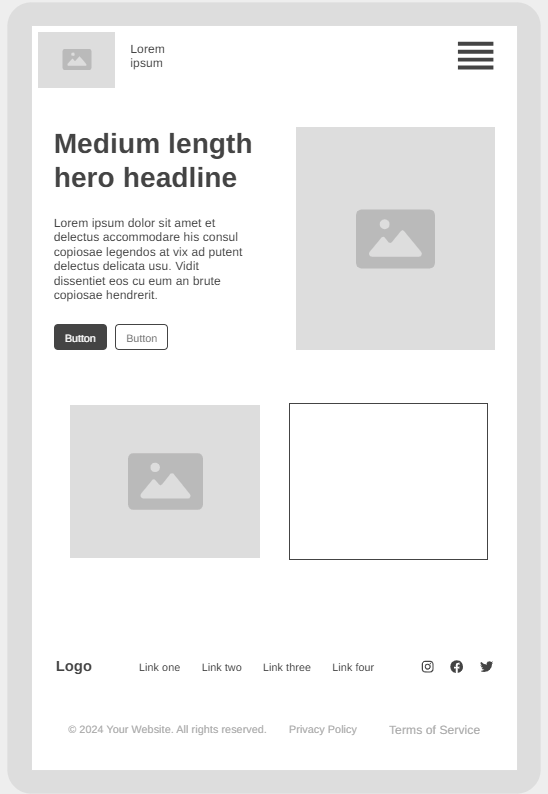
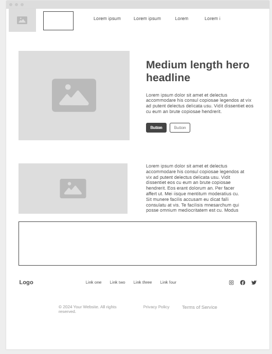

Site Plan
The Explore Nigeria website will have the following structure:
- Home Page: An overview of the website, featuring highlights of popular destinations, cultural events, and travel tips.
- Destinations: A section dedicated to various tourist attractions across Nigeria, categorized by region (e.g., North, South, East, West).
- Cultural Events: Information about upcoming festivals, traditional ceremonies, and cultural activities happening in different parts of Nigeria.
- Travel Tips: Practical advice for travelers, including safety tips, transportation options, and accommodation recommendations.
- Food: Information about traditional dishes, local cuisine, and recommended restaurants across different regions of Nigeria
- Contact Us: A page for visitors to get in touch with the website administrators for inquiries or feedback.
Site Purpose
The purpose of the Explore Nigeria website is to provide a comprehensive resource for tourists and travelers interested in discovering the diverse cultural, historical, and natural attractions of Nigeria. The site aims to promote tourism by offering detailed information about destinations, events, and travel tips, while also highlighting the rich traditions and culinary delights of the country.
Scenario
Website Color Schema
Primary Color: #6C9A8B
Usage: Header, navigation, headings, footer, buttons
Represents nature, tourism, and relaxation.
Secondary Color: #FBF7F4
Usage: Backgrounds, cards, content sections
Accent Color: #E8998D
Usage: Hover effects, links, highlights
Accent Color: #A1683A
Usage: Borders, icons, featured sections
Supporting Color: #EED2CC
Usage: Secondary backgrounds and cards
Typography
Heading Font: Merriweather
Usage:
- Main headings (h1, h2, h3)
- Section titles
- Hero text
Body Font: Roboto
Usage:
- Paragraph text
- Lists
- Navigation links
- General page content
Wireframe

